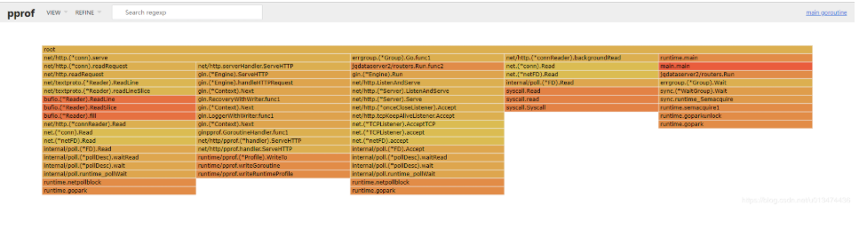

Go Micro使用pprof查找问题
pprof 是用于可视化和分析性能分析数据的工具。
当服务出现异常CPU占用，或者内存出现爆炸式增长时，我们可以使用pprof来帮助我们进行分析。
Micro框架
Golang中，可以采用：
runtime/pprof：采集程序（非 Server）的运行数据进行分析
net/http/pprof：采集 HTTP Server 的运行时数据进行分析
Go Micro中，github.com\asim\go-micro\debug\profile。两者均提供了开发人员使用。
http提供接口：
1 | mux.HandleFunc("/debug/pprof/", pprof.Index) |
runtime/pprof保存文件至：
/tmp/{cpu, mem}.pprof。
程序中，修改DefaultAddress，调用NewProfile既能完成部署工作，非常简单吧。
以上是，对pprof单独启动一个server端口，若是如我一样，使用Gin框架，则可以直接使用github.com/gin-contrib/pprof，将接口集成进去。
1 | app := gin.Default() |
这样调试功能还是很有作用的，例如，我们在业务中的实现就是，在调试阶段，将pprof开启，后端管理界面的后端程序，可以直接获取指定服务的pprof，将其显示到大盘界面上，这样可以不用单独拉出来去访问这些接口，而是将这些给集成到一起。
以下内容均来自：Gin框架中使用pprof
在浏览器里访问/debug/pprof, 通过这个页面我们可以看到我们需要的所有数据：
使用go tool pprof采集数据
再新建一个终端窗口输入以下命令，获取当前协程的堆栈信息：
1 | go tool pprof --seconds 20 http://localhost:3000/debug/pprof/goroutine |
上述命令的意思是采集协程数据并持续20S。执行结果如下：
现在已经进入了命令行模式，在最后一行的pprof后输入web,会自动打开本地浏览器并访问相关页面，当然这只限于图形化界面系统，如MacOS，Ubuntu Desktop，Windows等。如果不是，比如说使用的云服务器就可能会是如下结果：

在这种情况，我们可以使用数据采集的结果文件创建新的web服务，以用来在客户端浏览。请注意采集数据时的Saved profile一行，这便是我们需要的数据文件。启动新的终端窗口，输入如下命令：
1 | go tool pprof -http://0.0.0.0:3001 /home/ubuntu/pprof/pprof.rumgo.goroutine.001.pb.gz |
直接在浏览器里访问http://ip:3001, 如果没有安装graphviz，会出现Could not execute dot；may need to install graphviz。安装graphviz的方式如下：
1 | brew install graphviz # for macos |
注：graphviz一定是安装在服务器上的哦
在浏览器中我们可以看到图形化的函数调用堆栈信息。右上角的VIEW栏有一些选项，可以点开查看，Flame Graph就是传说中的火焰图。

go tool pprof命令行交互界面
go tool pprof只通过命令行也可以实现强大的功能，在上一节里我们遇到了一个命令，就是web，接下来再介绍几个常用的命令。
top
top默认查看程序中占用cpu前10位的函数。
top 3 可以查看程序中占用CPU前三位的函数。
最后一列为函数名称，其他各项内容意义如下：
- flat:当前函数占用CPU的耗时
- flat%:当前函数占用CPU的耗时百分比
- sum%:函数占用CPU的累积耗时百分比
- cum：当前函数+调用当前函数的占用CPU总耗时
- cum%: 当前函数+调用当前函数的占用CPU总耗时百分比
list
我们还可以使用list 函数名命令查看具体的函数分析，例如：
pdf命令可以生成可视化的pdf文件。
help
help命令可以提供所有pprof支持的命令说明。
本文标题：Go Micro使用pprof查找问题
文章作者：小师
发布时间：2020-11-05
最后更新：2022-05-04
原始链接：chunlife.top/2020/11/05/Go-Micro使用pprof查找问题/
版权声明：本站所有文章均采用知识共享署名4.0国际许可协议进行许可